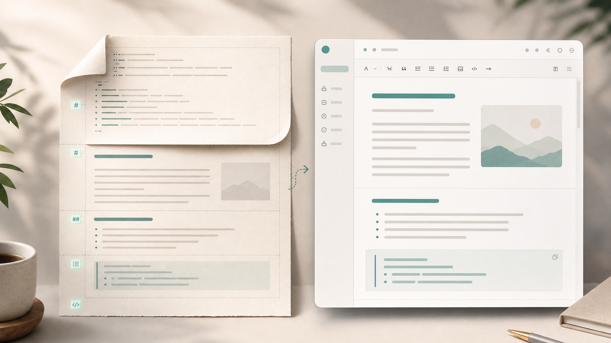

Journal Product Story
每天 3 分钟的人生坐标系统
你负责真实表达，AI 负责整理，Markdown 负责保存。它不是替你写日记，而是帮你把说出来的生活变成可回看的结构。
Why
传统日记的问题，不是写不下来，而是很难长期坚持
太散
自由写，未来难回看
纯文本没有结构，几年后很难按主题、情绪、目标和同一天快速找到自己。
太硬
模板写，灵感被压扁
九宫格或固定表单能保持整齐，但每天都填格子，很快就像报表。
太脆
App 写，数据被锁住
如果日记只能在某个应用里活着，长期记录就不够安全。
我们要的是：真实表达不丢，结构自然长出来。
Core Loop
从一句自然表达，到一篇确认过的 Markdown
输入自然文本
原文安全保存
JSON结构草稿
预览确认调整
归档正式 JMF
Review First
AI 只生成预览，用户确认后才写正式日记
01
原始输入先安全落地
用户提交后立刻保存，不依赖模型是否成功。
02
预览可以继续对话调整
比如“更自然一点”“保留更多原话”“这条放到灵感”。
03
确认后才进入正式 Markdown
正式文件永远代表用户确认过的版本。

JMF v1
Markdown 可读，块标记可解析
普通用户在块编辑器里写内容；专业用户可以看源码。系统靠 section marker 识别结构，不靠标题猜。
<!-- journal:section today-focus -->
## 今日重点
- 确认 JMF v1
- 用户确认后写入正式日记
<!-- /journal:section -->
Product Surface
默认是块编辑器，不是吓人的源码编辑器
今日晨间卡 · reviewing
原始输入
昨日回顾
今日重点
Local First
可信源、索引、版本，各做各的事
entries/
- 一天一个 Markdown
- 用户确认后的最新版
- 脱离应用也可阅读
.journal/
- 原始输入 JSONL
- 版本快照
- 草稿与内部元数据
SQLite FTS
- 全文检索
- 标签、状态、同日年轮
- 可从 Markdown 重建
数据库是索引，不是牢笼。
AI Provider
普通用户只填 API Key，专业用户再打开高级配置
默认提供 DeepSeek、OpenAI、智谱 GLM、本地 Mock。Provider 抽象保留扩展能力，但首屏不让用户研究 baseUrl。
Default
DeepSeek
填 API Key，测试连接，开始整理。
Default
OpenAI
填 API Key，选择模型，保持通用。
Default
智谱 GLM
适合中文输入与本地使用习惯。
Advanced
兼容模型
自定义 baseUrl、model、超时和 JSON mode。
Testing
Mock
无 Key 也能跑完整产品链路。
Later
Embedding
语义检索后续接入，不拖慢第一版。
Roadmap
第一阶段先让地基跑起来
Phase 1
Electron + React + .NET
窗口、前端、后端健康检查打通，建立工程骨架。
Phase 2
JMF 生成确认
输入、Mock AI、JSON 校验、草稿落盘、确认写入正式 Markdown。
Phase 3
编辑与结构保护
块编辑、源码模式、JMF marker 校验、保存前结构保护。
先让它成为一个可靠的日记系统，再让它变聪明。